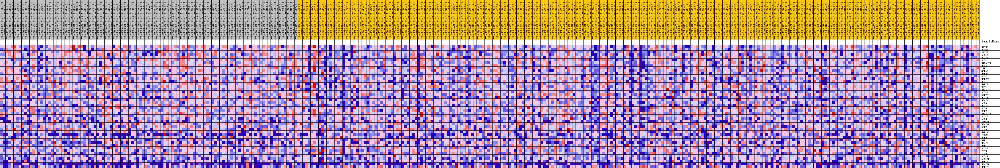
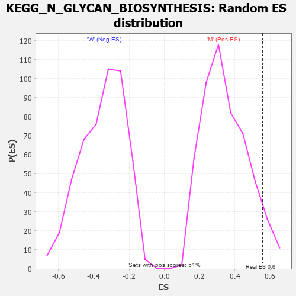

Profile of the Running ES Score & Positions of GeneSet Members on the Rank Ordered List
| Dataset | MUC16.MUC16.cls#M_versus_W.MUC16.cls#M_versus_W_repos |
| Phenotype | MUC16.cls#M_versus_W_repos |
| Upregulated in class | M |
| GeneSet | KEGG_N_GLYCAN_BIOSYNTHESIS |
| Enrichment Score (ES) | 0.55569017 |
| Normalized Enrichment Score (NES) | 1.5973481 |
| Nominal p-value | 0.06640625 |
| FDR q-value | 0.14040665 |
| FWER p-Value | 0.629 |
| PROBE | DESCRIPTION (from dataset) | GENE SYMBOL | GENE_TITLE | RANK IN GENE LIST | RANK METRIC SCORE | RUNNING ES | CORE ENRICHMENT | |
|---|---|---|---|---|---|---|---|---|
| 1 | STT3A | na | 440 | 0.184 | 0.0552 | Yes | ||
| 2 | DPAGT1 | na | 595 | 0.173 | 0.1120 | Yes | ||
| 3 | STT3B | na | 629 | 0.171 | 0.1703 | Yes | ||
| 4 | ALG10 | na | 1336 | 0.137 | 0.2046 | Yes | ||
| 5 | DDOST | na | 1436 | 0.133 | 0.2485 | Yes | ||
| 6 | ALG1 | na | 1999 | 0.116 | 0.2783 | Yes | ||
| 7 | B4GALT3 | na | 2366 | 0.108 | 0.3088 | Yes | ||
| 8 | MOGS | na | 2530 | 0.105 | 0.3420 | Yes | ||
| 9 | RPN1 | na | 2692 | 0.102 | 0.3741 | Yes | ||
| 10 | GANAB | na | 3589 | 0.088 | 0.3880 | Yes | ||
| 11 | MAN2A1 | na | 3771 | 0.085 | 0.4139 | Yes | ||
| 12 | ALG2 | na | 4059 | 0.081 | 0.4367 | Yes | ||
| 13 | MAN2A2 | na | 4110 | 0.081 | 0.4635 | Yes | ||
| 14 | MGAT2 | na | 4346 | 0.077 | 0.4858 | Yes | ||
| 15 | MAN1B1 | na | 5751 | 0.061 | 0.4815 | Yes | ||
| 16 | RFT1 | na | 6076 | 0.058 | 0.4955 | Yes | ||
| 17 | B4GALT1 | na | 6756 | 0.051 | 0.5008 | Yes | ||
| 18 | ALG11 | na | 6790 | 0.051 | 0.5176 | Yes | ||
| 19 | DOLPP1 | na | 6922 | 0.050 | 0.5324 | Yes | ||
| 20 | MGAT4A | na | 7146 | 0.048 | 0.5448 | Yes | ||
| 21 | MGAT1 | na | 7456 | 0.045 | 0.5548 | Yes | ||
| 22 | ALG5 | na | 8165 | 0.040 | 0.5557 | Yes | ||
| 23 | MGAT5 | na | 8861 | 0.034 | 0.5548 | No | ||
| 24 | ALG6 | na | 9654 | 0.028 | 0.5499 | No | ||
| 25 | RPN2 | na | 10638 | 0.020 | 0.5390 | No | ||
| 26 | B4GALT2 | na | 10806 | 0.019 | 0.5425 | No | ||
| 27 | ALG12 | na | 12068 | 0.011 | 0.5234 | No | ||
| 28 | ALG8 | na | 12257 | 0.009 | 0.5231 | No | ||
| 29 | ST6GAL1 | na | 13132 | 0.004 | 0.5085 | No | ||
| 30 | MGAT4B | na | 13352 | 0.002 | 0.5053 | No | ||
| 31 | DPM2 | na | 13380 | 0.002 | 0.5056 | No | ||
| 32 | ALG9 | na | 15513 | -0.002 | 0.4678 | No | ||
| 33 | MAN1A2 | na | 15559 | -0.003 | 0.4679 | No | ||
| 34 | TUSC3 | na | 15709 | -0.003 | 0.4664 | No | ||
| 35 | DPM3 | na | 15890 | -0.004 | 0.4646 | No | ||
| 36 | DPM1 | na | 16193 | -0.006 | 0.4612 | No | ||
| 37 | MGAT3 | na | 17685 | -0.014 | 0.4390 | No | ||
| 38 | DAD1 | na | 21175 | -0.031 | 0.3863 | No | ||
| 39 | ALG14 | na | 22304 | -0.035 | 0.3780 | No | ||
| 40 | FUT8 | na | 25434 | -0.048 | 0.3378 | No | ||
| 41 | ALG3 | na | 29559 | -0.063 | 0.2846 | No | ||
| 42 | ALG13 | na | 31191 | -0.068 | 0.2783 | No | ||
| 43 | ALG10B | na | 31746 | -0.069 | 0.2922 | No | ||
| 44 | MAN1A1 | na | 33775 | -0.076 | 0.2816 | No | ||
| 45 | MGAT5B | na | 36836 | -0.085 | 0.2555 | No | ||
| 46 | MAN1C1 | na | 54870 | -0.228 | 0.0072 | No |

